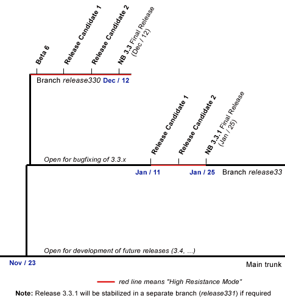

Release 3.3 Branches
The following picture describes branches schema for NetBeans 3.3.x releases.

More comments:
- Trunk is open for any new features (going to the future Release 3.4) after Nov/23
- Branch release33 is open only for bugfixing for NetBeans 3.3.x releases (3.3.1, 3.3.2, etc.)
- In "High Resistance Mode" only selected bugs are fixed (usually P1/P2 only)
- There might be more Release Candidates for NB3.3 and NB3.3.1 if necessary
Back to Release 3.3 pages.